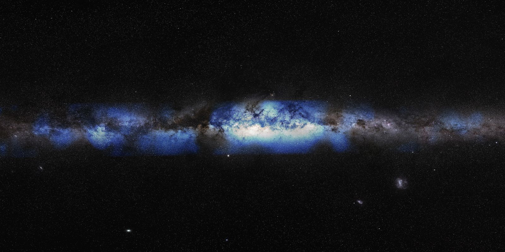

Nuestra galaxia, vista con neutrinos
En 2023, el observatorio IceCube obtuvo la primera imagen de la Vía Láctea hecha con neutrinos en lugar de luz. Aquí la ves encima de la imagen de siempre, en luz visible.

Para saber más
Comunicado de la Universidad de Wisconsin–Madison (inglés)
Artículo original: IceCube Collaboration, Science 380, 1338 (2023)
Imagen: IceCube Collaboration/U.S. National Science Foundation (Lily Le & Shawn Johnson)/ESO (S. Brunier). El fondo en luz visible es la panorámica ESO/S. Brunier (CC BY 4.0). Recortada y redimensionada.
Ver la física
IceCube buscó neutrinos “en cascada” (de tipo electrónico y tauónico), que dejan una bola de luz en el hielo. Su dirección se mide con menos precisión que la de los muones, pero tienen mucho menos ruido de fondo de la atmósfera en el cielo del sur, donde está el centro galáctico.
La señal concuerda con la emisión difusa esperada por choques de rayos cósmicos con el medio interestelar, con una significancia de 4.5σ.